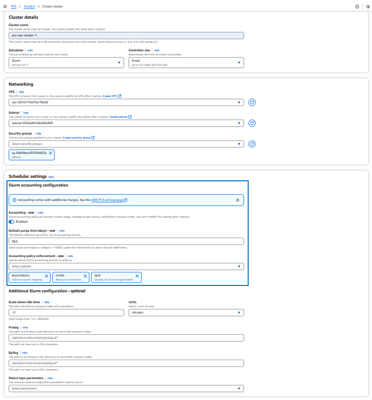
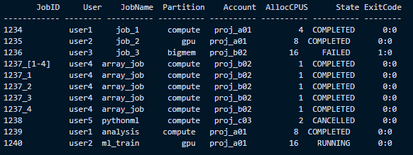
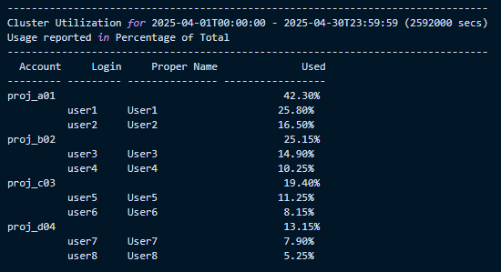

Blog 2
Giới thiệu tính năng kế toán dành cho AWS Parallel Computing Service
bởi Ramin Torabi, Nick Ihli, và Tarun Mathur | ngày 15 tháng 5 năm 2025 | trong mục AWS Parallel Computing Service , High Performance Computing, Technical How-to | Permalink | Share
Bài viết này được đóng góp bởi Ramin Torabi và Tarun Mathur từ AWS, cùng với Nick Ihli từ SchedMD.
AWS Parallel Computing Service (PCS) là một dịch vụ được quản lý, giúp bạn dễ dàng hơn trong việc chạy và mở rộng các khối lượng công việc high performance computing (HPC) trên AWS bằng Slurm. Các tổ chức vận hành cụm HPC thường muốn giám sát việc sử dụng tài nguyên, áp đặt giới hạn tài nguyên, và quản lý quyền truy cập vào dung lượng cụ thể giữa các người dùng và dự án. Họ muốn hiểu rõ “ai đã làm gì” trong cụm của mình để phục vụ cho việc báo cáo lãnh đạo, lập kế hoạch năng lực, và mục đích lập ngân sách.Giờ đây, PCS đã hỗ trợ kế toán, một tính năng của Slurm cho phép thực hiện những hoạt động này trong cụm. PCS quản lý cơ sở dữ liệu kế toán cho cụm, vì vậy bạn không cần phải tự thiết lập và quản lý một cơ sở dữ liệu kế toán riêng biệt.
Trong bài viết này, chúng tôi sẽ trình bày cách tính năng này hoạt động và giới thiệu cho bạn một số trường hợp sử dụng thực tế mà bạn có thể tự thử nghiệm.
Chuẩn bị
Làm theo các bước để truy cập chức năng kiểm toán trong PCS:
- Tạo một cụm PCS mới với Slurm 24.11 hoặc phiên bản mới hơn, bật tùy chọn accounting feature, và cấu hình các tham số kế toán tùy chọn như minh họa trong Hình 1.
- Khi trạng thái cluster chuyển sang Active, hãy xác minh rằng kiểm toán đã được bật và xem lại các tham số đã cấu hình trong trang console chi tiết của cụm.
- Tiếp theo, cấu hình và kết nối đến một login node như hướng dẫn tại đây, và thực hiện các lệnh kiểm toán bằng tài khoản root.

Trường hợp sử dụng 1: Sử dụng thuộc tính cho các dự án
Các tổ chức muốn có khả năng quan sát chi tiết việc sử dụng tài nguyên cho từng dự án hoặc phòng ban để có thể tính toán chi phí nội bộ cho các chi phí trung tâm liên quan. Để làm được điều đó, họ cần theo dõi và gán việc sử dụng ở nhiều cấp độ khác nhau. Một ví dụ trong Hình 2 minh họa:
- Tạo 3 user, tạo các account
proj\_physicsvàproj\_chemistry, sau đó thêm các user vào các account bằng hàmsacctmgr. Một “account” là một đơn vị tổ chức được sử dụng để nhóm và quản lý người dùng. - Mỗi user gửi một job và gán cho account
proj\_physicsbằng cách gán cờ–account= <account\_name>. - Xác minh rằng các job đó đã được gán đúng cho account proj_physics bằng cách tra cứu dữ liệu kế toán với hàm
sacct. - Xác minh rằng user1 là thành viên của cả hai account
proj\_physicsvàproj\_chemistry.

Trường hợp 2: Áp dụng giới hạn
Các tổ chức muốn thiết lập các ràng buộc cho những người dùng hoặc dự án cụ thể để đảm bảo rằng một bên không chiếm dụng quá nhiều tài nguyên. Một ví dụ:
- Đặt giới hạn 6000 CPU minutes (100 CPU hours) cho một user cụ thể bằng lệnh:
sacctmgr modify user username set GrpTRESRunMins=cpu=6000 - Chạy kiểm tra theo Hình 3 để xác nhận giới hạn đã được thiết lập đúng.
- Giả sử user đã sử dụng 95 giờ CPU, và sau đó cố gắng xác nhận một công việc vượt quá hạn mức của mình:
sbatch --cpus-per-task=10 --time=1:00:00 myjob.sh. Job này yêu cầu 10 CPUs trong 1 giờ, tức là 10 CPU/giờ, vượt quá 5 CPU/giờ còn lại trong giới hạn của user. - Việc xác nhận job sẽ thất bại và user sẽ thấy thông báo lỗi như trong Hình 4.
- Sau đó, user có thể submit một job nhỏ hơn, ví dụ 4 CPU hours, lệnh:
sbatch --cpus-per-task=2 --time=2:00:00 [smalljob.sh](http://smalljob.sh)Job này sẽ được chấp nhận vì nằm trong quota còn lại.


Trường hợp 3: Tạo báo cáo sử dụng
Các tổ chức muốn có các báo cáo tóm tắt về mức sử dụng để đánh giá việc tiêu thụ tài nguyên và lập kế hoạch phân bổ dung lượng trong tương lai. Một ví dụ:
- Truy vấn tất cả các job đã chạy trong cluster của bạn trong tuần vừa qua bằng lệnh:
sacct --starttime=$(date -d "7 days ago" +%Y-%m-%d) -- format="JobID,User,JobName,Partition,Account,AllocCPUS,State,ExitCode" - Ví dụ kết quả trong Hình 5 hiển thị JobID duy nhất của từng lần gửi job, người dùng nào đã xác nhận, job đó được xác nhận từ phân vùng (hàng đợi) nào, bao nhiêu CPU đã được sử dụng để chạy job, và trạng thái của job. Phân tích dữ liệu này để xác định các xu hướng chung trong cụm của bạn. Lưu ý rằng hầu hết các job được xác nhận đều đã hoàn thành, tuy nhiên job 1236 thất bại, job 1238 bị hủy, và job 1240 là một job lớn đang chạy với 16 CPU được phân bổ.
- Truy vấn mức sử dụng trong một tháng bằng lệnh:
sreport cluster AccountUtilizationByUser start=2025-04-01 end=2025-04-30 -t percent
format="Accounts,Login,Proper,Used"
- Ví dụ kết quả trong Hình 6 cho thấy mức sử dụng cụm theo từng dự án và người dùng. Phân tích các xu hướng này để xác định những điều chỉnh cần thiết cho chiến lược phân bổ của bạn giữa các user và account. Xác định xem có công bằng không khi
project\_a01đặc biệt làuser1đã chiếm tới 42% tài nguyên trong tháng. - Truy vấn các user sử dụng nhiều nhất trong tháng trước bằng lệnh:
sreport user topusage start=2025-03-01 end=2025-03-31
- Ví dụ kết quả trong Hình 7 liệt kê những user đứng đầu theo CPU/phút trong cụm. Lưu ý rằng user1 tiếp tục là người dùng nhiều tài nguyên nhất trong tháng trước.



Trường hợp 4: Xác định sự cố của công việc
Người dùng cá nhân muốn có các báo cáo tóm tắt về mức sử dụng để xác định và khắc phục các job bị lỗi. Cụ thể là:
- Người dùng kiểm tra các job thất bại trong tuần vừa qua với lệnh:
sacct -u username --starttime=$(date -d "7 days ago" +%Y-%m-%d) --format="JobID,JobName,State,ExitCode,Start,End,MaxRSS,MaxVMSize,Comment" - Ví dụ kết quả trong Hình 8 giúp người dùng nhận ra rằng hai job đã thất bại do sử dụng quá nhiều bộ nhớ, và job thứ ba thì thành công vì sử dụng bộ nhớ hiệu quả hơn (chỉ 2800MB).
- Người dùng sau đó xem lại các job scripts cho cnn_test và bert_run, và xác định nguyên nhân gốc rễ – các script này không yêu cầu đủ bộ nhớ. Người dùng có thể cân nhắc việc chỉnh sửa lại các script để yêu cầu đủ bộ nhớ và gửi lại hai job đó.

Để tham khảo thêm các use case về kế toán, xem tài liệu SchedMD cho các lệnh sacctmgr, sacct, và sreport.
Giá cả
Bật tính năng kế toán sẽ phát sinh hai loại chi phí bổ sung – một khoản phí sử dụng kế toán theo giờ (thay đổi tùy theo kích thước cluster controller được chọn) và một khoản phí lưu trữ kế toán được tính theo đơn vị GB-tháng. Phí sử dụng kế toán sẽ được tính trong suốt thời gian kế toán được bật trên cụm của bạn, còn phí lưu trữ kế toán sẽ thay đổi dựa trên số lượng bản ghi kế toán được lưu trữ (có thể cấu hình thông qua tham số Default Purge Time như được giải thích trong tài liệu). Chi tiết hơn có trên trang Giá cả PCS.
Kết luận
Trong bài viết này, chúng tôi đã trình bày cách bạn có thể tận dụng tính năng managed accounting trong AWS Parallel Computing Service để giám sát mức sử dụng cụm của mình. Hãy bắt đầu ngay hôm nay bằng cách truy cập vào AWS PCS management console. Cho chúng tôi biết ý kiến của bạn nhé!
TAGS: HPC
| Ramin Torabi Ramin Torabi là Senior Specialist HPC Solutions Architect tại AWS. Ông hỗ trợ khách hàng ở khu vực Trung Âu trong việc thiết kế giải pháp xoay quanh HPC. Ông có hơn 15 năm kinh nghiệm về HPC và CAE, đặc biệt trong các ngành công nghiệp Ô tô, Hàng không vũ trụ, và các ngành sản xuất khác. Ramin nhận bằng “Dr. rer. nat.” (Tiến sĩ) về vật lý cấu trúc hạt nhân lý thuyết tại Đại học Kỹ thuật Darmstadt vào năm 2009. |
|
| Nick Ihli Nick Ihli là Kĩ sư chính tại Solutions SchedMD. Ông đã tập trung vào các kế hoạch HPC trong suốt 20 năm và đặc biệt có chuyên môn về vận hành Slurm trên môi trường cloud. Ông đam mê giúp khách hàng trở nên hiệu quả hơn với Slurm trong các môi trường HPC và AI. Khi không làm việc với Slurm, bạn có thể bắt gặp ông đang huấn luyện thanh thiếu niên trên sân bóng đá hoặc sân bóng rổ. |
|
| Tarun Mathur Tarun Mathur là Quản lý Sản phẩm phụ trách HPC và scientific computing tại AWS. Mục tiêu của ông là giúp khách hàng chạy khối lượng công việc HPC có được trải nghiệm phối hợp mượt mà trên AWS. Ngoài công việc, ông yêu thích Brazilian jiu-jitsu, leo núi, và khám phá những quán bar trên sân thượng tuyệt nhất. |